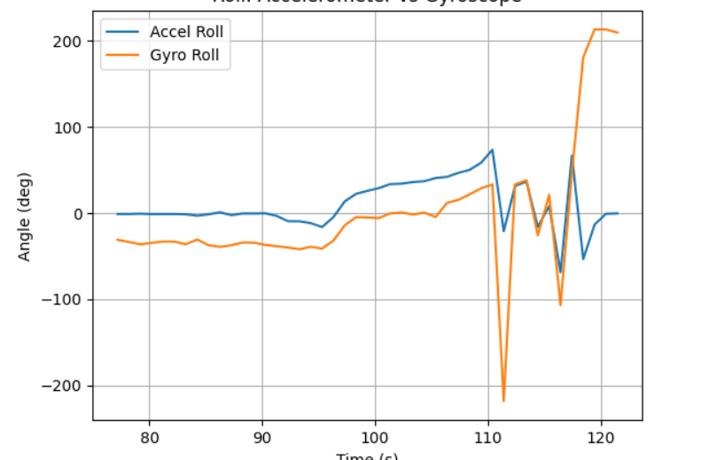

Lab 2: IMU
ECE 4160 – Fast Robots
Objective
The purpose of this lab was to start setting up sensors with our artemis board, starting with the IMU. The second goal was to be able to record a stunt with our car.
Lab Tasks
Set up the IMU
To set up the IMU I used one of the qwicc cable to connect the IMU to the Artemis. I then downloaded the library add learned how to control the sensor with the example code.
LSB of the IMU’s I²C address based on the AD0/ADR pin state (choosing between 0x68 and 0x69). My IMU used address 0x69 so I set AD0_VAL to 1. Depending on how the sensor is oriented, the accelerometer will read different values. For the gyroscope it reads very small values unless the sensor is moving.
Visual indication the board is running
I first added a simple LED blink so in setup() so that I could tell that the board was running.
Accelerometer: pitch and roll from accel
Code to calculate pitch and roll:
float pitch = atan2((&myICM)->accX(), (&myICM)->accZ()) * (180.0 / M_PI);
float roll = atan2((&myICM)->accY(), (&myICM)->accZ()) * (180.0 / M_PI);
Output at {-90, 0, 90} degrees

Accelerometer accuracy + two-point calibration
The equations I used for the calibration were: offset = (m1 + m2) / 2, scale = (t2 - t1) / (m2 - m1), where m1 and m2 are the measured values at two known orientations t1 and t2.


Noise analysis (FFT / frequency spectrum)
I first ploted the acc data on a frequency spectrum and recorded once with adding noise and once without. During recording I tapped and then vibrated the table to add nosie.


Cutoff frequency choice + low-pass filter
The data mainly fell in between 0 and 5 hz so I chose 7 hz as the cutoff frequency for my low-pass filter. Below you can see a comparison of the signal before and after using the low-pass filter.
fc = 7
alpha = (2*np.pi*fc) / (2*np.pi*fc + fs)
filtered = np.zeros_like(ax)
filtered[0] = ax[0]
for i in range(1, len(ax)):
filtered[i] = alpha*ax[i] + (1-alpha)*filtered[i-1]
plt.figure()
plt.plot(time, ax, label="Original")
plt.plot(time, filtered, label="Filtered")
plt.xlim(65, 76)
plt.xlabel("Time (s)")
plt.ylabel("Acceleration X")
plt.title("Original vs Low-Pass Filtered Signal")
plt.legend()
plt.grid(True)
plt.show()

Gyroscope: pitch, roll, yaw from gyro integration
I then encorperated the gyro data and calculated pitch and roll as following:
float dt = (now_us - last_us) / 1000000.0f;
float gx = sensor->gyrX();
float gy = sensor->gyrY();
float gz = sensor->gyrZ();
roll_gyro += gx * dt;
pitch_gyro += gy * dt;
yaw_gyro += gz * dt;
Compare gyro vs accelerometer vs filtered accel
I then plotted the difference in what the gyro and accelerometer measured for pitch and roll. The gyro data is more noisy and drifts over time while the accelerometer data is more stable.


Sampling frequency effects
[Discuss effect of different sampling frequencies on accuracy and drift.]
Complementary filter
[Describe complementary filter design. Include alpha and why you chose it.]
/* TODO: paste complementary filter snippet */
roll_cf = alpha * (roll_cf + gx * dt) + (1-alpha) * roll_acc;
pitch_cf = alpha * (pitch_cf + gy * dt) + (1-alpha) * pitch_acc;

Sampling speed measurements
Increasing the sample frequency helped to reduce the drift

Using a complementary filter helped to improve this problem a lot further
static unsigned long last_us = 0;
unsigned long now_us = micros();
if (last_us == 0) last_us = now_us;
float dt = (now_us - last_us) / 1000000.0f;
last_us = now_us;
float ax = sensor->accX();
float ay = sensor->accY();
float az = sensor->accZ();
float gx = sensor->gyrX();
float gy = sensor->gyrY();
float gz = sensor->gyrZ();
float roll_acc = atan2(ay, az) * 180.0f / M_PI;
float pitch_acc = atan2(-ax, sqrt(ay*ay + az*az)) * 180.0f / M_PI;
roll_gyro += gx * dt;
pitch_gyro += gy * dt;
yaw_gyro += gz * dt;
if (!cf_initialized) {
roll_cf = roll_acc;
pitch_cf = pitch_acc;
cf_initialized = true;
}
// complementary filter
roll_cf = ALPHA * (roll_cf + gx * dt) + (1.0f - ALPHA) * roll_acc;
pitch_cf = ALPHA * (pitch_cf + gy * dt) + (1.0f - ALPHA) * pitch_acc;
Store time-stamped IMU data in arrays (using flags)
[Discuss storage design: one big array vs separate arrays; chosen types; why.]
Memory discussion
[Compute memory use. How many seconds of data fit?]
/* TODO: fill in your memory math */
Bytes per sample = [ ]
Available RAM (bytes) ≈ [ ]
Max samples ≈ [ ]
Seconds at [ ] Hz ≈ [ ]
Demonstrate ≥5 seconds of IMU data sent over Bluetooth
[Describe your Bluetooth data send. Include snippet of Arduino send loop + Python receive/parser.]
/* TODO: Arduino snippet: format you send over BLE (CSV line per sample recommended) */
/* TODO: Python snippet: notification handler + parsing + plotting */

Record a stunt!
[Describe 5 minutes of driving tests and what you observed. Then describe the stunt you recorded.]
Results discussion
[Discuss the IMU data during the stunt and how it matches your observations.]

Conclusion
[Write your conclusion here.]